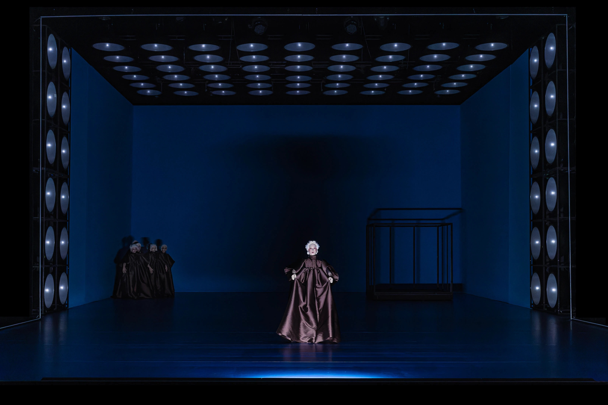

ТЕАТР ПОСТАНОВКИМЮЗИКЛЫ
Музыка, которая превращает сцену в мир
[ 10+ ПРОЕКТОВ ]
Я создаю звуковые ландшафты для театральных постановок, мюзиклов и опер, где музыка становится полноправным героем действия. Моя работа — это диалог между партитурой и драматургией: от камерных спектаклей до масштабных оперных проектов, от экспериментальных перформансов до классических мюзиклов.
Что я предлагаю:
- Музыка для всех форматов сцены: оригинальные саундтреки к спектаклям, аранжировки классических произведений, создание оперных либретто и мюзиклов «под ключ».
- Синтез жанров: сочетание академических традиций, этнических мотивов Башкортостана (курай, кубыз) и современных электронных текстур.
- Полный цикл сопровождения: от эскизов до премьеры, включая репетиции с оркестром, вокалистами и адаптацию звука под акустику зала.
- Саунд-дизайн для иммерсивного театра: пространственный звук, интерактивные аудиоэффекты, интеграция музыки в мультимедийные сценографии.


Мой подход:
- Музыка как драматургия: я выстраиваю партитуру так, чтобы лейтмотивы персонажей, ритм сцен и кульминации работали на общую идею.
- Коллаборация с режиссёрами: провожу музыкальные читки пьес, создаю «эмоциональные карты» спектакля, тестирую звуковые решения на этапе эскизов.
- Этнические корни в современном контексте: например, использование башкирского горлового пения в электронной опере или народных ритмов в мюзикле.
- Технологии для живой сцены: работа с микрофонной обработкой в реальном времени, проекция звука в 3D-пространстве, создание «звуковых декораций».

Театр — это живой организм, где музыка дышит в унисон с жестом актёра и взмахом режиссёрской кисти.
Этапы работы над проектом:
- Концепция: Изучаю сценарий, обсуждаю с режиссёром метафоры и эмоциональные акценты. Создаю «музыкальный сценарий» — схему взаимодействия звука с текстом, светом и движением.
- Эскизы и демо: Пишу ключевые темы: вокальные партии для оперных героев, хоровые фрагменты, лейтмотивы для оркестра. Предоставляю демо-треки для согласования стиля.
- Реализация:
- Для мюзиклов и опер: запись партитур с живым оркестром, работа с вокалистами, создание click-треков для синхронизации.
- Для драматических спектаклей: интеграция электронной музыки, саунд-дизайн, репетиции с актёрами.
- Премьера и адаптация: Участвую в технических репетициях, настраиваю баланс звука в зале, создаю студийные версии треков для промо-материалов.


Ресурсы и возможности
Работаю с театрами любого масштаба, используя ресурсы своей продюсерской площадки — Центра творческих инициатив «Арт-Вектор» (Уфа):
- Собственная студия с возможностью записи оркестра, хора и этнических инструментов.
- Сеть исполнителей: симфонические музыканты, фольклорные коллективы Башкортостана, вокалисты с оперным и эстрадным диапазоном.
- Продюсерская поддержка: помощь в организации гастролей, адаптации музыки под международные проекты, взаимодействие с фестивалями.
Формат работы
Написание оригинальной музыки для вашего спектакля.
Реаранжировка классики в современной стилистике.
Саунд-продюсирование готовых постановок.